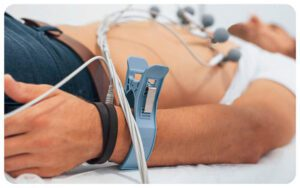
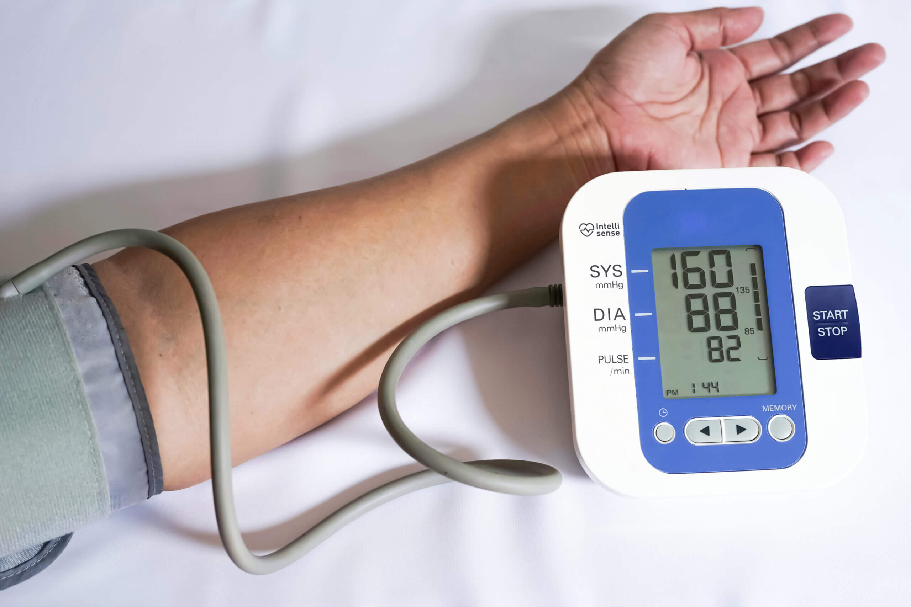
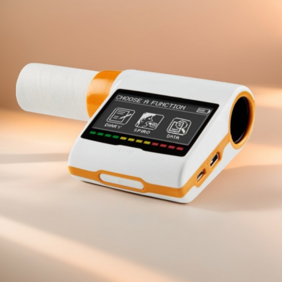

Медичні апаратно-комп’ютерні системи
Мікромініатюрний імплантант у сітківку ока Argus II
Як приклад, заслуговує уваги мікропроцесорна система, яку виготовили вчені з Німеччини – мікромініатюрний імплантант у сітківку ока Argus II. Він використовує масив електричних фоторецепторів, що стимулюють клітини сітківки в задній частині ока, яка потім посилає сигнал через зоровий нерв у мозок. Бездротовий сигнал передається від камери, вбудованої в окуляри, які носить пацієнт, на чіп, імплантований біля сітківки. Argus II працює для людей, які мають рідкісне захворювання-пігментний ретиніт, яке пошкоджує світлочутливі фоторецептори і не зачіпає інші клітини сітківки. Це ідеальний протез для відтворення оточуючого простору у портативній формі.
У даний час зроблено черговий крок у створенні пристроїв, що керуються безпосередньо мозком людини. Японська компанія Riken у співпраці з Toyota та рядом інших організацій створили такий інвалідний візок, що люди, які не здатні пересуватися без сторонньої допомоги, отримали шанс управляти візком самостійно. Приймальні датчики мозкових випромінювань перетворюють сигнали мозку, передають їх на спеціальний ноутбук і далі на механізми, що керують рухом візка.
Медичні системи моніторингу за станом хворих
Електрокардіографія (Екг)

Електрокардіогрáфія — метод графічної реєстрації електричних явищ, які виникають у серцевому м'язі під час його діяльності, з поверхні тіла. Криву, яка відображає електричну активність серця, називають електрокардіограмою.
Визначення тиску крові

Вимірювання тиску газів і рідин виконується за допомогою манометрів, дифманометрів, вакуумметрів, атмосферного тиску — барометрами, артеріального тиску — тонометрами.
Вимірювання частоти дихання

Спірометрію застосовують при клінічних дослідженнях з метою діагностики захворювань органів дихання і серцево-судинної системи, а також порушень функції дихання при інших патологічних станах (у тому числі неврологічних хворобах, вадах розвитку тощо).